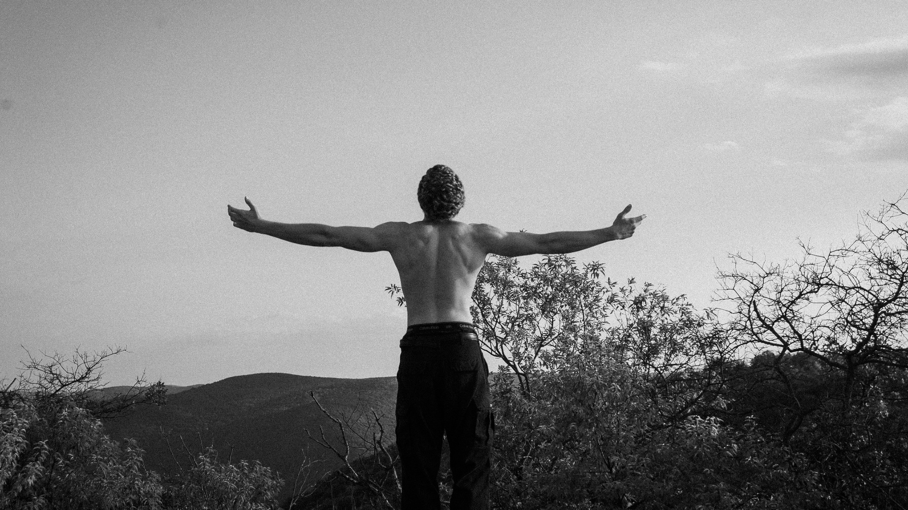

i chose this image because it felt the strongest in terms of composition and framing, especially in a wide format. the outstretched arms create a strong horizontal line across the frame, and the large amount of open sky helps emphasize the figure’s scale and isolation within the landscape. i was thinking about balance, symmetry, and negative space when taking it. cropping it to 1920 by 1080 strengthened the horizontal composition and made the image feel more intentional. i also adjusted the tonal range to deepen the contrast while still preserving detail in the figure and background.